Building a Sustainable Future, One Click at a Time.
Description: EcoVerse Hub is a modern online platform focused on educating people about sustainable living through tech innovations, green startups, and eco-friendly habits. The name EcoVerse combines Eco (ecology) and Verse (universe) to represent a connected community of green thinkers.
EcoVerse Hub aims to inspire and guide individuals toward sustainable living using technology, creativity, and education. The website will provide eco-tips, green tech reviews, and a community space where users can share their sustainability stories and innovations.
Font 1: Poppins – used for headings and titles.
Font 2: Open Sans – used for paragraphs and body text.
The following diagrams represent the layout structure of the home page for both mobile and desktop views.